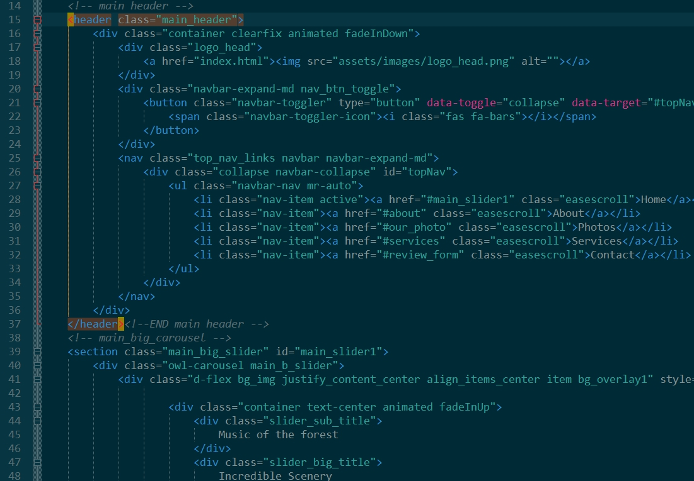
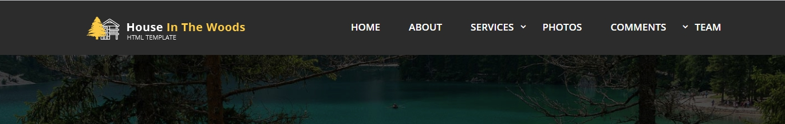
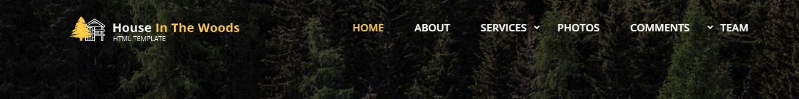
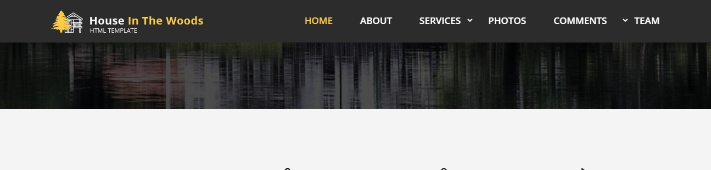
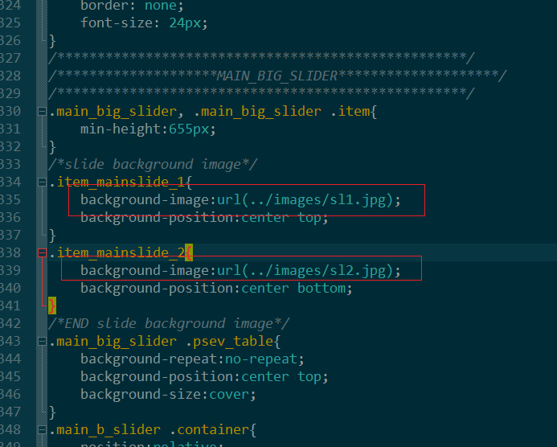
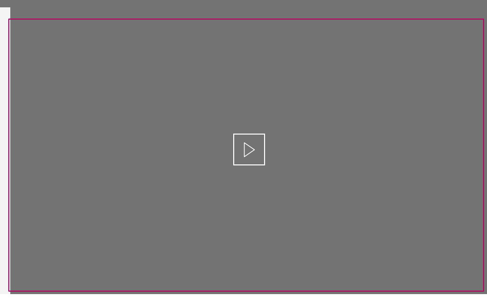
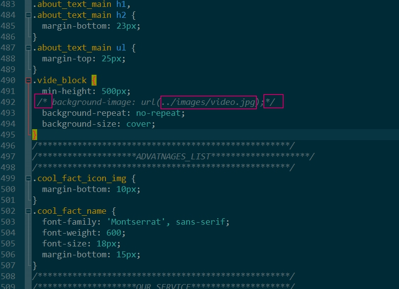

Thank you for purchasing my theme. If you have any questions, please feel free to email via my user page contact form here: mx_reliable on ThemeForest.
Thanks so much!
This theme is a adaptive layout with bootstrap 4.1 grid. All of the information within the main content area is nested within a div or section with some (class) like "main_header". The general template structure is the same throughout the template.

Statick Header, only one class:
EXAMPLE - class="main_header"

Float Header, add class (float_header), transparent background add class(transparen_bg_head)
EXAMPLE - class="main_header float_header transparen_bg_head"

Fixed Header, change class float_header on (fixe_header)
EXAMPLE - class="main_header fixe_header transparen_bg_head"

If you want to change image in main slider.
You will need open style.css file and find class (.item_mainslide_1, or .item_mainslide_2)
and change image address on your

second method If you would like to edit the background image, slider or others elements in one of these section, you would do the following: - open index.html file and add to main slider .item (style="background-image:url(add your image url);") and add in breckets url address your pic
How add background image for video block? Open style.css and find .vide_block. Change background url on your image and delete comment attribute
 How change video link?
Find in index.html class (popup_video) and change (href) attribute on your video link
I'm using two general CSS files in this theme:
/***************************************************/
/********************MAIN_HEADER********************/
/***************************************************/
some css code
/***************************************************/
/********************TOP NAV************************/
/***************************************************/
some css code
/***************************************************/
/********************MAIN_BIG_SLIDER****************/
/***************************************************/
If you would like to edit a specific section of the site, simply find the appropriate label in the CSS file, and then scroll down until you find the appropriate style that needs to be edited.
.main_header { background-color: #someColor; }
This theme imports three Javascript files.
jQuery is a Javascript library that greatly reduces the amount of code that you must write.
custom.js - is a file with general setting for this template.
Some js code in custom.js file:
//main carousel
$('.main_b_slider').owlCarousel({
loop:true, // constant sliding slides
margin:0, // distance between slides
autoplay:false, //auto plau slides - true
animateOut: 'fadeOut', //animation style
autoplayTimeout:7000, //auto play Timeout
smartSpeed:1100, //animation slide speed
nav:true, //sho navifation
dots:false, //hide pagination
navText:['',''],
});
// popup image js setting
$('.item.mix a').magnificPopup({
type: 'image', //type html element
fixedContentPos: false, //Popup content position
fixedBgPos: true, //Same as an option above, but it defines position property of the dark transluscent overlay.
overflowY: 'auto', //Defines scrollbar of the popup, works as overflow-y CSS property
closeBtnInside: false, //If enabled, Magnific Popup will put close button inside content of popup.
preloader: false, // off Preloader in Magnific Popup is used as an indicator of current status.
midClick: true, // If set to true lightbox is opened if the user clicked on the middle mouse button, or click with Command/Ctrl key.
gallery: { // The gallery module
enabled: true,
navigateByImgClick: true, // gallery navigation list
preload: [0,1]
},
});
I've used the following css, javascript libraries:
CSS:
JS: